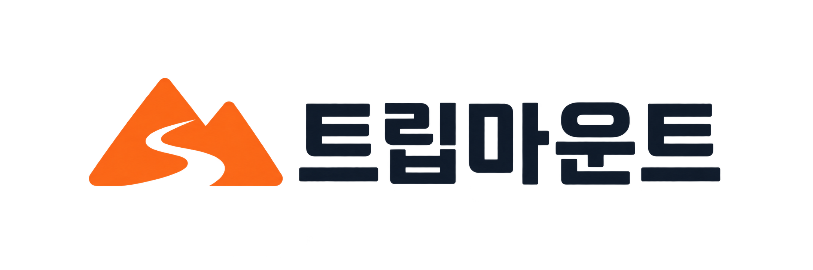

브랜드 로고
트립마운트
산봉우리와 굽이치는 여행길을 하나의 심볼에 담았습니다.
주황색 심볼과 짙은 남색 글자가 여행의 활기와 신뢰감을 전합니다.

따뜻한 주황짙은 남색
투명 배경 PNG · 2172 × 724px
홈페이지의 상단·푸터·로딩 화면과 브랜드 표기에 적용한 로고입니다.
산봉우리와 굽이치는 여행길을 하나의 심볼에 담았습니다.
주황색 심볼과 짙은 남색 글자가 여행의 활기와 신뢰감을 전합니다.

투명 배경 PNG · 2172 × 724px
홈페이지의 상단·푸터·로딩 화면과 브랜드 표기에 적용한 로고입니다.